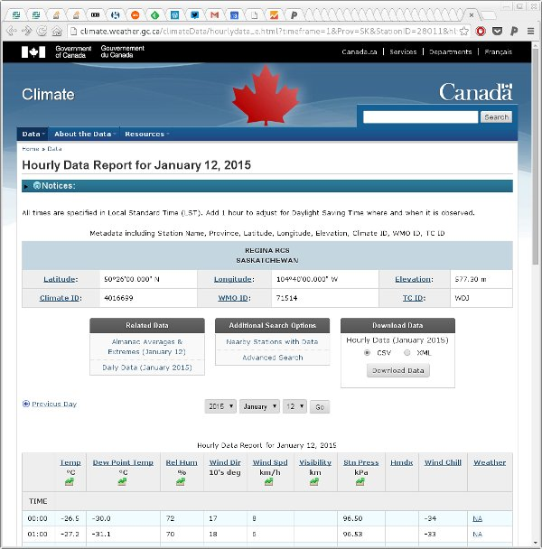

Harvesting more Canadian climate data
A while back I wrote some code to download climate data from Government of Canada’s historical climate/weather data website for one of our students. In May this year (2016) the Government of Canada changed their website a little and the API code that responded to requests had changed URL and some of the GET parameters had also changed. In fixing those functions I also noted that the original code only downloaded hourly data and not all useful weather variables are recorded hourly; precipitation for example is only in the daily and monthly data formats. This post updates the earlier one, explaining what changed and how the code has been updated. As an added benefit, the functions can now handle downloading daily and monthly data files as well as the hourly files that the original could handle.

The genURLS() function now has an extra argument timeframe which allows you to select which type of data to download, defaulting to hourly data:
genURLS <- function(id, start, end, timeframe = c("hourly", "daily", "monthly")) {
years <- seq(start, end, by = 1)
nyears <- length(years)
timeframe <- match.arg(timeframe)
if (isTRUE(all.equal(timeframe, "hourly"))) {
years <- rep(years, each = 12)
months <- rep(1:12, times = nyears)
ids <- rep(id, nyears * 12)
} else if (isTRUE(all.equal(timeframe, "daily"))) {
months <- 1 # this is essentially arbitrary & ignored if daily
ids <- rep(id, nyears)
} else {
years <- start # again arbitrary, for monthly it just gives you all data
months <- 1 # and this is also ignored
ids <- id
}
timeframe <- match(timeframe, c("hourly", "daily", "monthly"))
URLS <- paste0("http://climate.weather.gc.ca/climate_data/bulk_data_e.html?stationID=", id,
"&Year=", years,
"&Month=", months,
"&Day=14",
"&format=csv",
"&timeframe=", timeframe,
"&submit=%20Download+Data"## need this stoopid thing as of 11-May-2016
)
list(urls = URLS, ids = ids, years = years, months = rep(months, length.out = length(URLS)))
}If we wanted all the data for 2014 for the Regina RCS station then we could generate the URLs we’d need to visit as follows
regina <- genURLS(28011, 2014, 2014)
length(regina$urls)
head(regina$urls)
[1] 12
[1] "http://climate.weather.gc.ca/climate_data/bulk_data_e.html?stationID=28011&Year=2014&Month=1&Day=14&format=csv&timeframe=1&submit=%20Download+Data"
[2] "http://climate.weather.gc.ca/climate_data/bulk_data_e.html?stationID=28011&Year=2014&Month=2&Day=14&format=csv&timeframe=1&submit=%20Download+Data"
[3] "http://climate.weather.gc.ca/climate_data/bulk_data_e.html?stationID=28011&Year=2014&Month=3&Day=14&format=csv&timeframe=1&submit=%20Download+Data"
[4] "http://climate.weather.gc.ca/climate_data/bulk_data_e.html?stationID=28011&Year=2014&Month=4&Day=14&format=csv&timeframe=1&submit=%20Download+Data"
[5] "http://climate.weather.gc.ca/climate_data/bulk_data_e.html?stationID=28011&Year=2014&Month=5&Day=14&format=csv&timeframe=1&submit=%20Download+Data"
[6] "http://climate.weather.gc.ca/climate_data/bulk_data_e.html?stationID=28011&Year=2014&Month=6&Day=14&format=csv&timeframe=1&submit=%20Download+Data"
The function that downloads and reads in the data was getData().
getData <- function(stations, folder, timeframe = c("hourly", "daily", "monthly"), verbose = TRUE, delete = TRUE) {
timeframe <- match.arg(timeframe)
## form URLS
urls <- lapply(seq_len(NROW(stations)),
function(i, stations, timeframe) {
genURLS(stations$StationID[i],
stations$start[i],
stations$end[i], timeframe = timeframe)
}, stations = stations, timeframe = timeframe)
## check the folder exists and try to create it if not
if (!file.exists(folder)) {
warning(paste("Directory:", folder,
"doesn't exist. Will create it"))
fc <- try(dir.create(folder))
if (inherits(fc, "try-error")) {
stop("Failed to create directory '", folder,
"'. Check path and permissions.", sep = "")
}
}
## Extract the data from the URLs generation
URLS <- unlist(lapply(urls, '[[', "urls"))
sites <- unlist(lapply(urls, '[[', "ids"))
years <- unlist(lapply(urls, '[[', "years"))
months <- unlist(lapply(urls, '[[', "months"))
## filenames to use to save the data
fnames <- paste(sites, years, months, "data.csv", sep = "-")
fnames <- file.path(folder, fnames)
nfiles <- length(fnames)
## set up a progress bar if being verbose
if (isTRUE(verbose)) {
pb <- txtProgressBar(min = 0, max = nfiles, style = 3)
on.exit(close(pb))
}
out <- vector(mode = "list", length = nfiles)
hourlyNames <- c("Date/Time", "Year", "Month","Day", "Time", "Data Quality",
"Temp (degC)", "Temp Flag", "Dew Point Temp (degC)",
"Dew Point Temp Flag", "Rel Hum (%)", "Rel Hum Flag",
"Wind Dir (10s deg)", "Wind Dir Flag", "Wind Spd (km/h)",
"Wind Spd Flag", "Visibility (km)", "Visibility Flag",
"Stn Press (kPa)", "Stn Press Flag", "Hmdx", "Hmdx Flag",
"Wind Chill", "Wind Chill Flag", "Weather")
dailyNames <- c("Date/Time", "Year", "Month", "Day", "Data Quality", "Max Temp (degC)", "Max Temp Flag",
"Min Temp (degC)", "Min Temp Flag", "Mean Temp (degC)", "Mean Temp Flag",
"Heat Deg Days (degC)", "Heat Deg Days Flag", "Cool Deg Days (degC)", "Cool Deg Days Flag",
"Total Rain (mm)", "Total Rain Flag", "Total Snow (cm)", "Total Snow Flag",
"Total Precip (mm)", "Total Precip Flag", "Snow on Grnd (cm)", "Snow on Grnd Flag",
"Dir of Max Gust (10s deg)", "Dir of Max Gust Flag", "Spd of Max Gust (10s deg)", "Spd of Max Gust Flag")
monthlyNames <- c("Date/Time", "Year", "Month",
"Mean Max Temp (degC)", "Mean Max Temp Flag",
"Mean Min Temp (degC)", "Mean Min Temp Flag",
"Mean Temp (degC)", "Mean Temp Flag",
"Extr Max Temp (degC)", "Extr Max Temp Flag",
"Extr Min Temp (degC)", "Extr Min Temp Flag",
"Total Rain (mm)", "Total Rain Flag",
"Total Snow (cm)", "Total Snow Flag",
"Total Precip (mm)", "Total Precip Flag",
"Snow Grnd Last Day (cm)", "Snow Grnd Last Day Flag",
"Dir of Max Gust (10s deg)", "Dir of Max Gust Flag",
"Spd of Max Gust (10s deg)", "Spd of Max Gust Flag")
cnames <- switch(timeframe, hourly = hourlyNames, daily = dailyNames, monthly = monthlyNames)
TIMEFRAME <- match(timeframe, c("hourly", "daily", "monthly"))
SKIP <- c(16, 25, 18)[TIMEFRAME]
for (i in seq_len(nfiles)) {
curfile <- fnames[i]
## Have we downloaded the file before?
if (!file.exists(curfile)) { # No: download it
dload <- try(download.file(URLS[i], destfile = curfile, quiet = TRUE))
if (inherits(dload, "try-error")) { # If problem, store failed URL...
out[[i]] <- URLS[i]
if (isTRUE(verbose)) {
setTxtProgressBar(pb, value = i) # update progress bar...
}
next # bail out of current iteration
}
}
## Must have downloaded, try to read file
## skip first SKIP rows of header stuff
## encoding must be latin1 or will fail - may still be problems with character set
cdata <- try(read.csv(curfile, skip = SKIP, encoding = "latin1", stringsAsFactors = FALSE), silent = TRUE)
## Did we have a problem reading the data?
if (inherits(cdata, "try-error")) { # yes handle read problem
## try to fix the problem with dodgy characters
cdata <- readLines(curfile) # read all lines in file
cdata <- iconv(cdata, from = "latin1", to = "UTF-8")
writeLines(cdata, curfile) # write the data back to the file
## try to read the file again, if still an error, bail out
cdata <- try(read.csv(curfile, skip = SKIP, encoding = "UTF-8", stringsAsFactors = FALSE), silent = TRUE)
if (inherits(cdata, "try-error")) { # yes, still!, handle read problem
if (delete) {
file.remove(curfile) # remove file if a problem & deleting
}
out[[i]] <- URLS[i] # record failed URL...
if (isTRUE(verbose)) {
setTxtProgressBar(pb, value = i) # update progress bar...
}
next # bail out of current iteration
}
}
## Must have (eventually) read file OK, add station data
cdata <- cbind.data.frame(StationID = rep(sites[i], NROW(cdata)),
cdata)
names(cdata)[-1] <- cnames
out[[i]] <- cdata
if (isTRUE(verbose)) { # Update the progress bar
setTxtProgressBar(pb, value = i)
}
}
out # return
}The main infelicity is that you have to supply the getData() with a data frame containing the station IDs and start and end years respectively for the data you want to collect. This suited my needs as we wanted to grab data from 10 stations with different start and end years as required to track station movements. It’s not as convenient if you only want to grab the data for a single station, however.
getData() gains the same timeframe argument as genURLS(). In addition, to handle the, quite frankly odd!, choice of characters used in the various flag columns, I now do conversion of the file encoding from latin1 to UTF-8 using the iconv() function. Whether this works portably or not remains to be seen — I’m not that familiar with file encodings. If it doesn’t work, an option would be to determine what the user’s locale is and from that change the encoding to the native encoding.
One thing you’ll note quickly if you start downloading data using this function is that the web script the Government of Canada is using on their climate website will quite happily generate a fully-formed file containing no actual data (but with all the headers, hourly time stamps, etc) if you ask it for data outside the window of observations for a given station. There are no errors, just lots of mostly empty files, bar the header and labels.
One other thing to note is that getData() returns the downloaded data as a list and no attempt is made to flatten the individual components to a single large data frame. That’s because it allows for any failed data downloads (or reads) and records the failed URL instead of the data. This gives you a chance to manually check those URLs to see what the problem might be before re-running the job, which because we saved all the CSVs will run very quickly from that local cache.
The use of data.frames internally is showing signs of being a bit of a bottleneck performance-wise; rbind()-ing many stations or files of data takes a long time. I plan on changing the code to use tbl_dfs now that Hadley has moved that functionality to the tibble package. I am reliably informed that bind_rows() is much quicker.
The eagle-eyed among you will notice the dreaded stringsAsFactors = FALSE in the definition of getData(). I’m beginning to see why people that work with messy data find the default stringsAsFactors = TRUE down right abhorrent!
To see getData() in action, we’ll run a quick job, downloading the 2014 data for two stations
- Regina INTL A (51441)
- Indian Head CDA (2925)
First we create a data frame of station information
stations <- data.frame(StationID = c(51441, 2925),
start = rep(2014, 2),
end = rep(2014, 2))Then we pass this to getData() with the path to the folder we wish to cache downloaded CSVs in
met <- getData(stations, folder = "./csv", verbose = FALSE)
Warning in getData(stations, folder = "./csv", verbose = FALSE):
Directory: ./csv doesn't exist. Will create it
This will take a few minutes to run, even for just 24 files, as the site is not the quickest to respond to requests (or perhaps they are now throttling my workstation’s IP?). Note I turned off the printing of the progress bar here, only because this doesn’t play nicely with knitr’s capturing of the output. In real use, you’ll want to leave the progress bar on (which it is by default) so you see how long you have to wait till the job is done.
Once this has finished, we can quickly determine if there were any failures
any(failed <- sapply(met, is.character))
[1] FALSE
If any had failed, the failed logical vector could be used to index into met to extract the URLs that encountered problems, e.g.
unlist(met[failed])If there were no problems, then the components of met can be bound into a data frame using rbind()
met <- do.call("rbind", met)The data now looks like this
head(met)
StationID Date/Time Year Month Day Time Data Quality Temp (degC)
1 51441 2014-01-01 00:00 2014 1 1 00:00 \u0087 -23.3
2 51441 2014-01-01 01:00 2014 1 1 01:00 \u0087 -23.1
3 51441 2014-01-01 02:00 2014 1 1 02:00 \u0087 -22.8
4 51441 2014-01-01 03:00 2014 1 1 03:00 \u0087 -23.3
5 51441 2014-01-01 04:00 2014 1 1 04:00 \u0087 -24.3
6 51441 2014-01-01 05:00 2014 1 1 05:00 \u0087 -24.3
Temp Flag Dew Point Temp (degC) Dew Point Temp Flag Rel Hum (%)
1 -26.3 77
2 -26.1 77
3 -25.8 77
4 -26.3 77
5 -27.1 78
6 -27.0 79
Rel Hum Flag Wind Dir (10s deg) Wind Dir Flag Wind Spd (km/h)
1 13 <NA> 22
2 12 <NA> 26
3 12 <NA> 22
4 13 <NA> 18
5 13 <NA> 14
6 9 <NA> 6
Wind Spd Flag Visibility (km) Visibility Flag Stn Press (kPa)
1 19.3 <NA> 95.38
2 24.1 <NA> 95.38
3 24.1 <NA> 95.39
4 24.1 <NA> 95.47
5 24.1 <NA> 95.56
6 24.1 <NA> 95.60
Stn Press Flag Hmdx Hmdx Flag Wind Chill Wind Chill Flag
1 NA NA -35 NA
2 NA NA -36 NA
3 NA NA -35 NA
4 NA NA -34 NA
5 NA NA -34 NA
6 NA NA -30 NA
Weather
1 Snow,Blowing Snow
2 Snow,Blowing Snow
3 Snow,Blowing Snow
4 Snow,Blowing Snow
5 Snow
6 <NA>
Yep, still a bit of a mess; some post processing is required if you want tidy names etc. The columns names are hardcoded but retain the messy names as given to them by the Government of Canada’s webmaster. Cleaning up afterwards is remains advised.
A final note, I could have run this over all the cores in my workstation or even on all the computers in my small computer cluster but I didn’t, instead choosing to run on a single core overnight to get the data we needed. Please be a good netizen if you do use the functions I’ve discussed here as other people will no doubt want to access the Government of Canada’s website. Don’t flood the site with requests!
If you have any suggestions for improvements or changes, let me know in the comments. The latest versions of the genURLS() and getData() functions can be found in this Github gist.